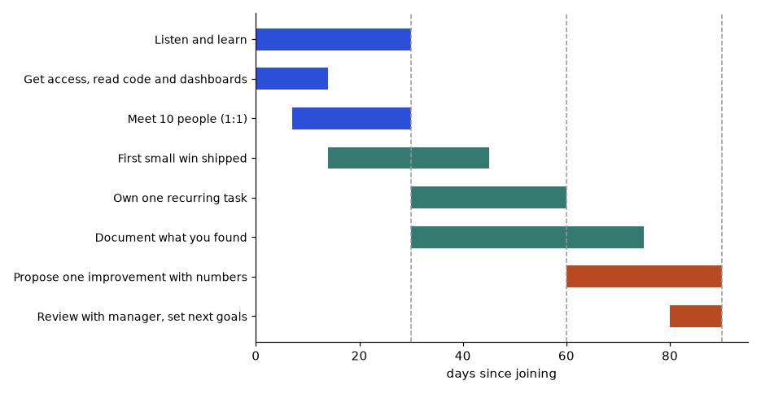

You now have skills, a plan and a job-search method. This chapter answers the questions that come after: Should I buy a certification? Should I do a degree? How do I start with open source? Is Kaggle worth my time? Should I aim to become a manager? And the quiet question under all of them: why do I sometimes feel I am not good enough? You will leave with decision rules you can compute, a contribution path you can start this month, honest facts about Kaggle scores, a picture of long-term growth (IC, manager, T-shaped), and tools for handling self-doubt without pretending it does not exist.
| Term | Meaning |
|---|---|
| Certification | An exam, from a company or vendor, that proves you know a product or skill |
| Associate / Professional / Foundational | Common levels, from basic to advanced |
| Online degree | A university degree taught mostly online, often part-time |
| Opportunity cost | What you give up (time, other learning) when you choose something |
| Signal | Evidence a hiring person uses to guess your skill |
They help most when: (1) a job post or a company filter asks for one, (2) you have no experience on that tool and need structured learning, (3) your employer is a partner of that vendor and values them. They help least when you already have real projects with the same tool.
| Target | Possible certificates (check current names and codes on vendor sites) |
|---|---|
| Analyst | Power BI Data Analyst (PL-300), Tableau Desktop Specialist. SQL needs none. |
| Data Engineer | AWS Cloud Practitioner then AWS Data Engineer Associate; Azure DP-900 then DP-700; Google Professional Data Engineer; Databricks Associate; Snowflake SnowPro Core |
| ML / AI Engineer | AWS ML Engineer Associate; Azure AI-102; Google Professional ML Engineer |
| Platform / MLOps | Terraform Associate; CKA / CKAD (Kubernetes) |
Vendors rename and retire exams often. Before you spend money, open the official page, confirm the exam is current, read the objectives list and fee, and compare with the job posts you are targeting. Do not trust a list from a video or a book (including this one) for current names.
DataTalks.Club Zoomcamps (data engineering, machine learning, MLOps, LLMs), Harvard CS50, Stanford CS229, CS231n and CS224n course material, fast.ai, Google Machine Learning Crash Course and Kaggle Learn. Free programs give the learning and a project. They do not give an exam badge, but a public project can be a stronger signal.
| Option | When it makes sense |
|---|---|
| Part-time or online degree (for example IIT Madras BS in Data Science and Applications, other Indian PG programs, Georgia Tech OMSCS or OMSA, UT Austin online programs) | You want long-term depth, a recognised degree for visa or role filters, and can commit hours for years |
| Research roles and PhD-heavy teams | A master's or PhD often matters |
| Most analyst, data engineer and ML engineer roles | Projects and experience usually win |
Details like fees, duration, entry rules and recognition change. Check each programme page, ask alumni on LinkedIn, and read one honest review before committing.
Problem 14.1.1 A certificate needs 80 hours of study. You have 7 hours a week. When will you be ready, and what do you give up?
| Formula | weeks = hours needed / hours per week |
|---|---|
| Plug in | 80 / 7 |
| Compute | 80 / 7 = 11.43 weeks |
| Answer | About 11.4 weeks, so allow 12 weeks, plus a buffer for missed days. |
| Check | 7 x 11.43 = 80. Also 12 weeks x 7 = 84 hours, enough. |
| Why it matters | These 12 weeks of study time could build one portfolio project instead. The decision depends on which one a recruiter will reward for your target role. |
Problem 14.1.2 A degree needs about 1,300 study hours in total (a made-up example; check your programme). At 7 hours a week how many years? At 15 hours a week?
| Compute | 1,300 / 7 = 185.7 weeks = 185.7 / 52 = 3.57 years; 1,300 / 15 = 86.7 weeks = 1.67 years |
|---|---|
| Answer | About 3.6 years at 7 hours a week, and 1.7 years at 15 hours a week. |
| Check | Real output below. |
| Why it matters | For a working learner the time cost is years, not months. Be sure you have the energy (see 14.6). |
for h in (60,80,120):
print("cert",h,"h at 7h/week ->",round(h/7,1),"weeks")
print("degree 1300h at 7h/wk ->",round(1300/7/52,2),"years; at 15h/wk ->",round(1300/15/52,2))cert 60 h at 7h/week -> 8.6 weeks
cert 80 h at 7h/week -> 11.4 weeks
cert 120 h at 7h/week -> 17.1 weeks
degree 1300h at 7h/wk -> 3.57 years; at 15h/wk -> 1.67If you answer yes to two or more, go ahead. Otherwise skip it. Avoid expensive bootcamps that promise guaranteed jobs, and avoid collecting certificates without projects.
A cloud certificate is useful if you will work on that cloud. It also forces you to see parts of the platform you may skip while building.
Check yourself
| Term | Meaning |
|---|---|
| Open source | Software whose code is public and can be used and improved by anyone under a licence |
| Repository (repo) | A project's folder of code and history, usually on GitHub |
| Issue | A written report of a bug or a feature request |
| Pull request (PR) | A proposal to change the code, submitted for review |
| Maintainer | A person who manages the project and approves changes |
| CONTRIBUTING.md | A file explaining how to contribute to the project |
| Good first issue | A label for tasks meant for new contributors |
Level 1 Use the library
Level 2 Read its code
Level 3 File a good bug report
Level 4 Fix docs and typos
Level 5 Fix a "good first issue"
Level 6 Add a small feature
Level 7 Review other people's PRs; maintain a partEach step needs only the one before. Most people spend months at levels 1 to 4, and that is fine.
pandas, scikit-learn, Apache Airflow, dbt, Hugging Face libraries, Great Expectations, Evidently, LangChain and LlamaIndex, plus testing tools such as Locust, where your current skill gives you a real advantage. Check each project's labels and recent activity: pick a project with maintainers who respond in days, not years.
Title: DataFrame.groupby().agg() raises KeyError with duplicate column names (version X)
What I did: <5 lines of code that reproduce it>
What I expected: <one line>
What happened: <error message pasted>
Environment: Python version, library version, OSA bug report that can be reproduced in 5 lines is already a contribution.
Problem 14.2.1 Plan 8 weeks at 2 hours a week. Week 1 to 2: read CONTRIBUTING and code. Week 3: file or improve one bug report. Week 4: one docs fix. Weeks 5 to 8: one good-first-issue PR. How many hours in total, and how many on the PR?
| Compute | total 2 x 8 = 16 hours; PR weeks 5 to 8 = 4 weeks x 2 = 8 hours |
|---|---|
| Answer | 16 hours in total, 8 on the PR (half). |
| Check | Weeks 1-2: 4 h, week 3: 2 h, week 4: 2 h, PR weeks: 8 h. Then 4 + 2 + 2 + 8 = 16. Yes. |
| Why it matters | Sixteen hours gives you a public PR link, a stronger proof than most certificates. |
Problem 14.2.2 What does a first PR to fix a typo cost and give? A typo PR takes about 30 minutes. If 5 such PRs are accepted in different projects, what is the value?
| Step 1 | Time: 5 x 0.5 = 2.5 hours. |
|---|---|
| Step 2 | Value: you learn the fork, branch, commit and PR flow five times, and you get five accepted contributions. |
| Answer | 2.5 hours for real practice with the workflow. Do not spam: make only real fixes. Many projects dislike low-value PRs made only for badges. |
| Check | The skill gained is the workflow, not the typo. |
Publish one tool from your own work: a small loader that moves CSV files into a warehouse, or a simple anomaly detector (Chapter 11 shows the README). Add a licence, tests and a clear README. A small, tidy tool used by a few people is worth more than a big, messy one.
Hacktoberfest, Google Summer of Code (if you are eligible), Outreachy. Rules and eligibility change each year; read the official page.
Reviewers read your code and your messages. That is practice for code review at work (Chapter 4). Also hiring managers can read your PRs.
Check yourself
| Term | Meaning |
|---|---|
| Kaggle | A website with datasets, notebooks and machine-learning competitions |
| Public leaderboard (LB) | Scores computed on part of the hidden test data, visible during the contest |
| Private leaderboard | Scores on the rest of the hidden data, revealed at the end; decides the final rank |
| CV (cross-validation) | Testing on held-out parts of your training data, repeated across splits |
| Shake-up | A big change of ranks between public and private leaderboards |
| Ensembling / stacking | Combining several models' predictions |
| GBM | Gradient Boosting Machine, such as XGBoost or LightGBM |
Kaggle Learn courses -> Titanic / House Prices -> Playground Series (monthly)
-> featured and research competitionsPlayground Series competitions are made for learning. Other platforms: DrivenData, Zindi, Analytics Vidhya, AIcrowd, and Hugging Face challenges.
A solid local cross-validation that tracks the leaderboard, feature engineering, tuning of gradient-boosted trees, ensembling, error analysis, and reading winning solutions after the contest. Goals: Notebooks Expert, then Competitions Expert (medals) over time. Rules and tier names can change; see the site.
The public leaderboard uses only part of the test data. Small samples are noisy.
Problem 14.3.1 A model has a true accuracy of 80%. Compute the standard error of its measured accuracy on 200, 1,000 and 5,000 rows.
| Formula | standard error = √(p x (1 - p) / n) |
|---|---|
| Plug in | p = 0.80, so p x (1 - p) = 0.16 |
| Compute | n = 200: √(0.16 / 200) = √0.0008 = 0.0283; n = 1,000: √0.00016 = 0.0126; n = 5,000: √0.000032 = 0.0057 |
| Answer | The measured accuracy wobbles by about ±2.8 points on 200 rows (95% band ±5.5 points), ±1.3 on 1,000 rows, and ±0.6 on 5,000 rows. |
| Check | Increasing n 25 times (200 to 5,000) should cut error by √25 = 5 times: 0.0283 / 5 = 0.0057. Yes. |
| Why it matters | Plain words: if the public leaderboard uses 200 rows, a difference of 2 points between two models is just noise. |
Problem 14.3.2 Simulate 50 identical models (true accuracy 80%) scored on a public 200-row set. What does the best-looking one score? What does a model of the same quality score on a 5,000-row private set?
import random
random.seed(1)
best=max(sum(random.random()<0.8 for _ in range(200))/200 for _ in range(50))
print("best of 50 identical models on 200 rows:",best)
random.seed(2)
priv=sum(random.random()<0.8 for _ in range(5000))/5000
print("same quality model on 5000 private rows:",priv)Predict first: will the best of 50 be above or below 0.80? Real output:
best of 50 identical models on 200 rows: 0.855
same quality model on 5000 private rows: 0.802Kaggle builds feature engineering, validation discipline and error analysis. Those transfer to any ML job. Gradient-boosted trees are strong on tabular data, which is the kind of data most companies have.
Check yourself
| Term | Meaning |
|---|---|
| IC (Individual Contributor) | A person whose main value is their own technical work |
| Staff / Principal | Senior IC levels, with influence across teams |
| Manager | A person whose main value is the growth and output of a team |
| Director | A manager of managers |
| Specialist | A deep expert in a niche (MLOps, data architecture, applied science) |
| T-shaped | Broad knowledge across many areas (the top bar of the T) and deep skill in one or two (the stem) |
Level names differ by company. Read each company's career ladder when available.
IC track: Analyst -> Senior -> Staff -> Principal
Management track: Team lead -> Manager -> Director
Specialist: MLOps, Data Architect, Applied Scientist
Other: Product management, consulting, entrepreneurship, freelancingChoosing is not permanent. Many people try a lead role for a year and return to IC, and that is normal.
Problem 14.4.1 Compare IC and manager using your own weights (sum 10): craft 4, people 2, pay growth 2, flexibility 2. Scores 1 to 5: IC: craft 5, people 2, pay growth 3, flexibility 4. Manager: craft 2, people 5, pay growth 4, flexibility 2.
| Formula | total = sum of weight x score |
|---|---|
| IC | 4x5 + 2x2 + 2x3 + 2x4 = 20 + 4 + 6 + 8 = 38 |
| Manager | 4x2 + 2x5 + 2x4 + 2x2 = 8 + 10 + 8 + 4 = 30 |
| Answer | IC 38, manager 30. With these weights, the IC path fits better. |
| Check | If you raise the weight of "people" and reduce "craft", the result flips. The score reveals your values, it does not decide for you. |
| Why it matters | Check the weights honestly. Do not choose management only for title or pay: ask what a manager does all day (meetings, feedback, hiring, conflict) and whether you would enjoy it. |
The stem: one or two deep areas, for example data engineering with strong SQL and pipelines, or ML with strong evaluation. The bar: statistics, cloud, system design, communication, domain (Chapter 13).
Problem 14.4.2 You have about 365 study hours a year (1 hour a day). Split 50% depth (SQL and data engineering), 30% breadth (cloud, stats, ML basics), 20% communication. How many hours each?
| Compute | 365 x 0.50 = 182.5; 365 x 0.30 = 109.5; 365 x 0.20 = 73 |
|---|---|
| Answer | 182.5 hours depth, 109.5 hours breadth, 73 hours communication. |
| Check | 182.5 + 109.5 + 73 = 365. Yes. |
| Why it matters | Without a plan the stem stays thin. Any earlier technical work already gives depth in measurement, a head start on the stem. |
Keep a brag document: a running list of what you did, with numbers (hours saved, errors reduced, reports delivered). In reviews, bring this and the market data from Chapter 12. Ask your manager for specific feedback every month: "What is one thing I should do more or less?"
Small analytics or automation gigs, content writing and tutoring can bring income and sharpen skills (teaching deepens learning). First check your employment contract for moonlighting and confidentiality rules, and never use company data or code.
Promotion is usually a case built from evidence of impact and scope. Start collecting that evidence from day one.
Check yourself
I want to say this plainly. Learning a new field while working full time is hard. Feeling lost, slow or "not smart enough" is common and does not tell you your real ability. Many skilled people have felt it. I am not a doctor, and this is not medical advice. It is practical, ordinary advice, and 14.6 says when to talk to a professional.
| Term | Meaning |
|---|---|
| Imposter feelings | A belief that you are a fraud and will be "found out", despite evidence of ability |
| Comparison trap | Judging your behind-the-scenes against other people's highlights |
| Burnout | Deep tiredness and loss of interest from long stress |
| Evidence log | A written list of things you did and learned, used as proof against negative thoughts |
You moved from being an expert (in your earlier role) to being a beginner (data and ML). The experience gap feels sharp because you remember how it felt to be good. Also social media shows only wins. Also interviews measure a narrow skill set under pressure, and a rejection feels personal when it is not.
Problem 14.5.1 Build an evidence log for 12 weeks. You record 3 items per week. How many items by the end? If you read the log whenever you feel stuck, what does it show?
| Compute | 3 x 12 = 36 items |
|---|---|
| Answer | 36 items. Each is a concrete fact ("wrote a LAG query that finds day-over-day change", "explained percentiles to my team") that contradicts "I am learning nothing". |
| Check | Count is 3 per week for 12 weeks. Yes. |
| Why it matters | Feelings are loud; a written log is a calm second witness. |
Problem 14.5.2 A week has 168 hours. You sleep 7.5 hours a night, work 45 hours, commute 1.5 hours on each of 5 days, and study 7 hours. How many hours remain for everything else (family, rest, meals, chores, exercise)?
| Step 1 | Sleep 7.5 x 7 = 52.5; commute 1.5 x 5 = 7.5 |
|---|---|
| Step 2 | Used = 52.5 + 45 + 7.5 + 7 = 112 |
| Step 3 | Remaining = 168 - 112 = 56 |
| Answer | 56 hours, about 8 hours a day, are left, and they must also cover meals, chores and family. |
| Check | Real output below. |
| Why it matters | Adding another 7 hours of study would leave 49 hours. Be honest about what you can carry; a plan that ignores sleep fails. |
sleep=7.5*7; work=45; commute=5*1.5; study=7
print("left", 168-sleep-work-commute-study)left 56.0The same habits keep you effective on call, in incidents and in hard projects. Teams value people who stay calm and ask for help early.
Check yourself
Ordinary doubt comes and goes. Talk to someone if you notice that:
What to do: talk to a trusted friend or family member, your doctor, or a qualified counsellor or therapist. Many companies offer an employee assistance programme, so check your HR portal. If you are in danger or may harm yourself, contact local emergency services or a crisis helpline in your country right away, and tell someone near you. Mental health support is part of a sustainable career, not a detour from it.
A study buddy, a community such as DataTalks.Club Slack, a local meetup, or a mentor makes the road less lonely. Meet a buddy weekly for 30 minutes: each explains one concept to the other (teaching back, Chapter 2).
Problem 14.6.1 You plan 12 weekly 30-minute study-buddy sessions. How many hours? Compare with explaining alone: why does it help?
| Compute | 12 x 0.5 = 6 hours |
|---|---|
| Answer | Six hours in total, and each session has you explain a topic aloud, which exposes gaps (teaching back). |
| Check | 12 weeks x 30 minutes = 360 minutes = 6 hours. Yes. |
| Why it matters | A small, regular, social habit protects motivation. |
Check yourself
You got the offer. The next goal is trust, and trust is built by a visible, boring, reliable start. A 30/60/90 plan is a short written list of what you will learn, deliver and propose by day 30, 60 and 90. Share it with your manager in week one and ask, "What would you change?" The plan below is a template; replace the items with your team's reality.

How to read it: bars overlap on purpose. You keep listening while you start delivering. The dashed lines mark day 30, 60 and 90, your three check-ins with your manager.
| Window | Goal | Evidence you can show |
|---|---|---|
| Days 1 to 30 | Learn | Access working, local setup documented, 10 one-to-one chats held, a glossary of team terms |
| Days 31 to 60 | Deliver | One small win shipped, one recurring task owned, a short note on what you found |
| Days 61 to 90 | Improve | One proposal with numbers, a review with your manager, next three goals agreed |
Problem 14.7.1 You plan 10 one-to-one chats between day 7 and day 30. How many per week?
| Window | 30 - 7 = 23 days = 23 / 7 = 3.29 weeks |
|---|---|
| Rate | 10 / 3.29 = 3.04 per week |
| Answer | About 3 a week, so book them in week one rather than "when there is time". |
| Check | 3.04 x 3.29 = 10. |
Give each item 1 point each for: specific (names a thing), measurable (a number or artefact), dated, and agreed with your manager. A weak item: "Learn the codebase" scores 0 of 4. A strong rewrite: "By day 45, ship a fix for one failing data-quality check, reviewed by my manager" scores 4 of 4.
Problem 14.7.2 Score and fix: "Improve the dashboard sometime in the quarter."
| Score | Specific: partly (dashboard named), 0.5 rounded down to 0. Measurable: 0. Dated: 0. Agreed: 0. Total 0 of 4. |
|---|---|
| Rewrite | "By day 75, cut the sales dashboard load time from 40 seconds to under 10 by pre-aggregating the daily table; agreed with my manager on day 30." (Numbers are an invented example.) |
| New score | 4 of 4. |
Check yourself
Pattern cheat-sheet
| Need | Pattern |
|---|---|
| Weeks to certify | hours needed / hours per week |
| Certificate rule | 2 or more "yes" on the five questions, else build a project |
| Open-source first PR | read CONTRIBUTING, claim issue, small change, test, clear PR text |
| Standard error of accuracy | √(p(1 - p) / n) |
| Kaggle rule | trust CV, not a small public LB |
| Weighted choice | sum of weight x score |
| Week budget | 168 - sleep - work - commute - study |
| Self-doubt tools | evidence log, compare with past self, ask early |
You are my patient, practical professor. I am a working professional at an Indian MNC moving into data roles. The topic is Chapter 14, deciding on certifications and degrees. Ask me my target role and my time per week, then help me apply the five-question decision rule and compute the hours. Tell me how to check current exam names, fees and objectives myself rather than quoting them. Then quiz me with 5 scenarios, one at a time.
You are my patient, practical professor. I am a working professional moving into data roles in India. The topic is Chapter 14, the open-source contribution path (use, read, bug report, docs fix, good first issue, feature). Give me an 8-week plan at 2 hours a week for a project I choose: [PASTE PROJECT HERE]. Explain how to read CONTRIBUTING.md, how to write a reproducible bug report, and how to write a clear PR description. Then review my draft issue or PR text: [PASTE HERE]
You are my patient, practical professor. I am a working professional at an Indian MNC moving into data work. The topic is Chapter 14, Kaggle strategy and why the public leaderboard is noisy. Explain standard error of accuracy step by step with small numbers, then give me 8 graded exercises without solutions about cross-validation, leaderboard noise and shake-ups. Finally help me plan a one-month Playground Series routine at 5 hours a week.
You are my patient, practical professor. I am a working professional in India moving into data roles. The topic is Chapter 14, long-term growth: individual contributor versus manager, and T-shaped skills. Ask me what I enjoy and dislike at work, build a weighted comparison with my own weights, and plan a yearly 365-hour learning split for depth, breadth and communication. Then run a mock interview on "where do you see yourself in five years" and give feedback.
You are my patient, practical professor. I am a working professional in India studying while working full time, and I sometimes feel like an imposter. The topic is Chapter 14, wellbeing and self-doubt. Be kind and practical, not clinical. Help me build an evidence log, plan a realistic 168-hour week, and write a short script to ask a peer for help. Remind me that you are not a doctor and tell me when to talk to a trusted person or a counsellor. My week and worries: [PASTE HERE]